PROCEDA
Mini-Manual
Interação com o Programa Evap-56
Conversão de arquivos do Chuvaz 1.0
Vou utilizar como exemplo o arquivo "Abelardo_Luz.db" que você enviou
como exemplo dos passos que você utiliza para compatibilização dos arquivos.
Como você verificará, o processo de compatibilização (importações e Exportações)
se tornaram muito mais simples.
A primeira coisa a ser feita no seu caso, que já possui arquivos no padrão do
Chuvaz 1.0, é a conversão do arquivo para o formato do Proceda. Para isto utilizaremos
um conversor de dados, disponível através do menu de utilitários do Proceda.
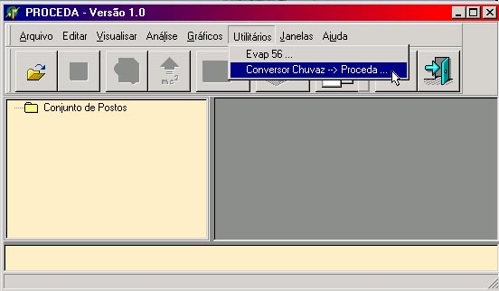
Neste programa, a única coisa a ser feita é a seleção do arquivo a ser convertido.
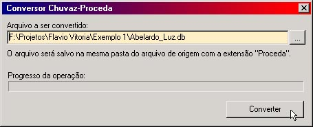
Após o pressionamento do botão, um arquivo "xxx.Proceda" será gerado na mesma
pasta do arquivo selecionado.
Configurando as propriedades de cada Campo/Posto
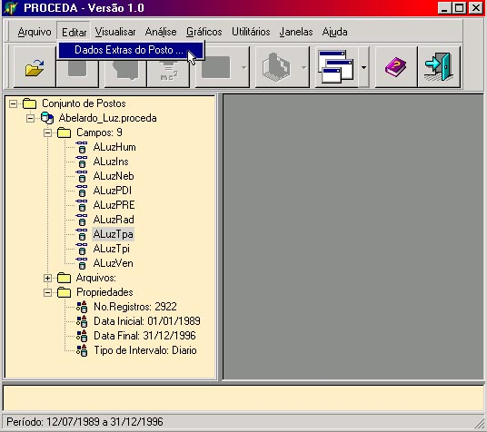
Através do menu "Editar/Dados Extras do Posto" temos acesso a janela
de edição das propriedades de um campo.

As propriedades mais importantes nesta janela são:
- O Tipo dos Dados
- A Unidade dos Dados
Estas propriedades são utilizadas pelos plugins para determinação dos tipos
dos campos. Um dos plugins que mais utilizam estas propriedades é o plugin de
exportação "Isareg - Evap 56" que utiliza estes dados para gerar especificidades
de cada arquivo criado.
Portanto é extremamente importante a definição destas propriedades.
Exportando um conjunto de dados
Através do menu "Arquivo/Exportar" ...
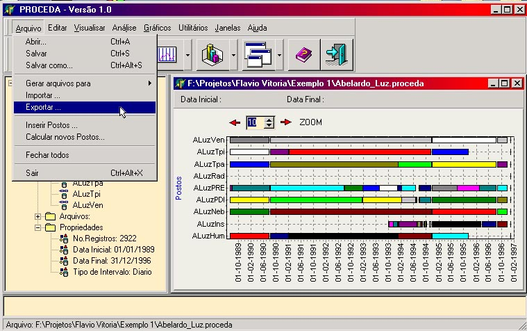
Você tem acesso a janela de exportação.
Nesta janela o usuário selecionará o plugin desejado, após, deverá
ajustar suas propriedades.
Como mostrado abaixo, existe instalado apenas um plugin de exportação de dados.
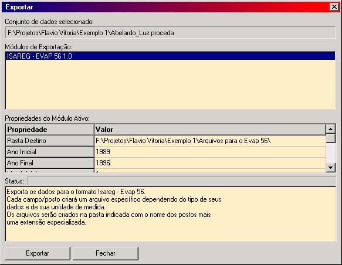
As seguintes propriedades foram alteradas conforme nossas necessidades:
- Pasta Destino: F:\Projetos\Flavio Vitoria\Exemplo 1\Arquivos para o Evap 56
- Ano Inicial: 1989
- Ano Final: 1996
As outras ficaram com seus valores padrões.
Após o pressionamento do botão "Exportar", 9 arquivos foram gerados
na pasta selecionada com as extensões específicas para cada tipo de dado.

Gerando dados de Evapotransiração
Através do menu "Utilitários/Evap 56" temos acesso ao programa
Evap 56 onde poderemos gerar os dados de evapotranspiração.
O passo mais importante neste momento é a definição do diretório de trabalho,
neste caso, "F:\Projetos\Flavio Vitoria\Exemplo 1\Arquivos para o Evap 56".
Após isto, é só escolher os arquivos para cada opção do programa ...
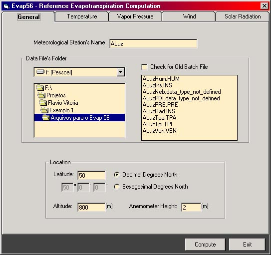
... e pressionar o botão "Compute".
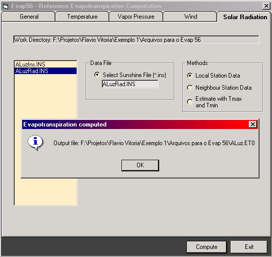
Importando os dados gerados pelo programa Evap 56
Através do menu "Arquivo\Importar" podemos importar o arquivo ETo gerado
pelo programa Evap 56.
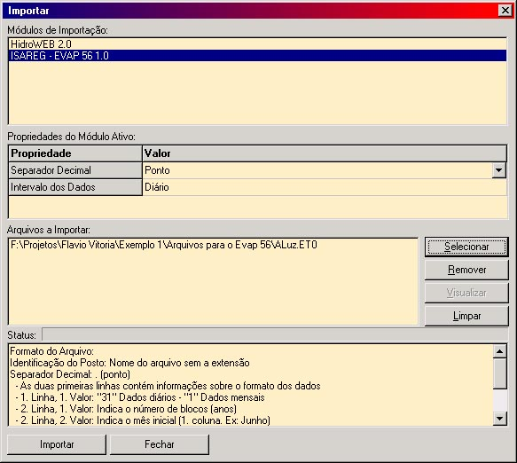
Após a importação é necessário fornecer um nome para o arquivo.
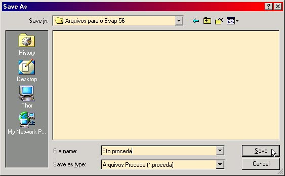
Após o salvamento, o arquivo é automaticamente aberto no Proceda.
Mas o que nos interessa é a concatenação destes dados com os dados que já possuímos.
Para isso utilizamos o menu "Arquivo\Inserir Postos"
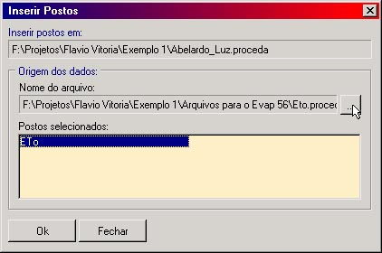
Nesta janela selecionamos o arquivo a ser concatenado com o conjunto de dados
atual selecionado na árvore de objetos da janela principal.
Também selecionamos os postos a serem concatenados, neste caso apenas um, o campo
de ETo.
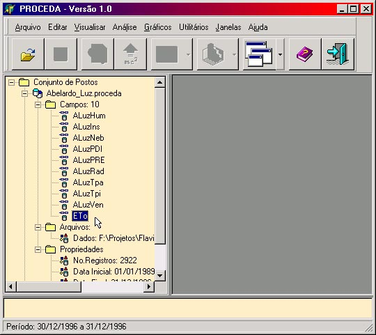
Após isto basta configurarmos suas propriedades conforme explicado em um tópico
acima e salvarmos as modificações.
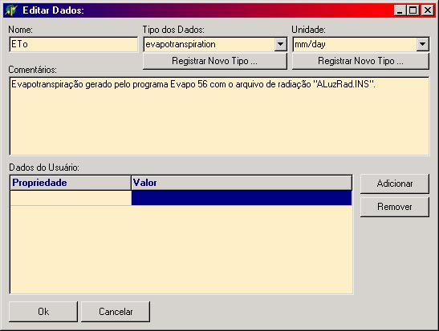
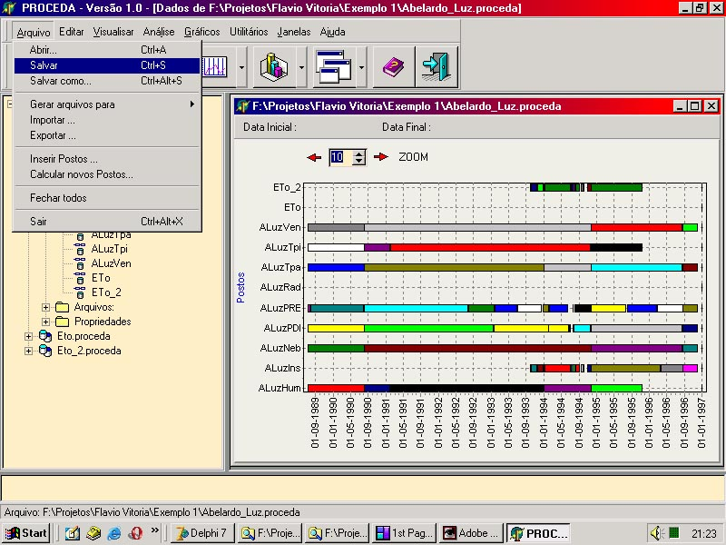
Outras Opções
Existem muitas ações que estão disponíveis através de menus indiretos sensitivos
ao contexto acessados através do botão de função do mouse.
Como exemplo motramos o menu de ações chamado através do objeto que representa
um campo/posto.
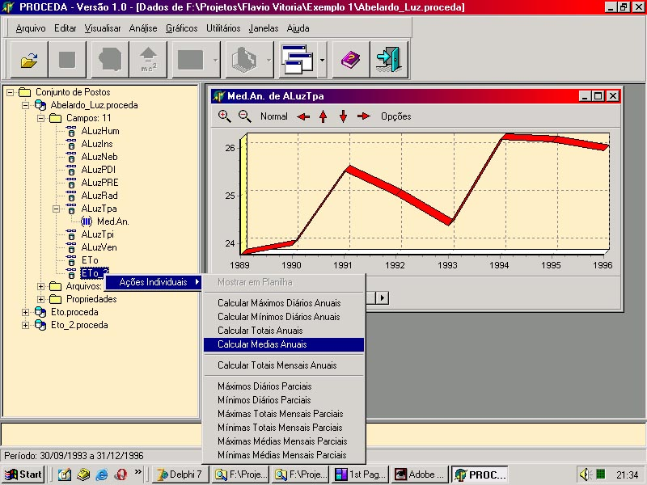
Notas importantes a lembrar
- Sempre verifique o conjunto de dados selecionado na janela principal
- Antes de um exportação, defina as propriedades de todos os campos/postos
- Lembre-se que a Evapo-transpiração calculada dependerá das escolhas feitas
no programa Evapo 56
- Não esqueça de salvar os dados modificados.
- Sempre procure por ações de menu indiretas.